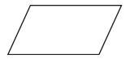

Diagramas de flujo
Un diagrama de flujo es la representación gráfica mediante símbolos especiales, de los pasos o procedimientos de manera secuencial y lógica que se deben realizar para solucionar un problema específico.
Los diagramas de flujo facilitan la comunicación entre los programadores y los usuarios, además de que permiten de una manera más rápida detectar los posibles errores de lógica que se presenten al implementar el algoritmo. Su correcta construcción es sumamente importante porque a partir del mismo se escribe un programa en algún lenguaje de programación. Si el diagrama de flujo está completo y correcto, el paso del mismo a un lenguaje de programación es relativamente simple y directo.
Definición: Un diagrama de flujo es una representación gráfica de un algoritmo. Los símbolos utilizados satisfacen las recomendaciones de la International Organization for Standardization (ISO) y el American National Standards Institute (ANSI).
Enseguida se muestran algunos de los principales símbolos utilizados para construir un diagrama de flujo.
| Símbolo | Descripcion del símbolo |
|---|---|
 |
Se utiliza para marcar el inicio y el fin del diagrama de flujo. |
|  | Se utiliza para introducir los datos de entrada. Expresa lectura. |
 |
Representa un proceso. En su interior se colocan asignaciones, operaciones aritméticas, cambios de valor de celdas en memoria, etc. |
 |
Se utiliza para representar una decisión. En su interior se almacena una condición, y, dependiendo del resultado, se sigue por una de las ramas o caminos alternativos. Este símbolo se utiliza con pequeñas variaciones en las estructuras selectivas |
 |
Se utiliza para representar una decisión múltiple. En su interior se almacena un selector, y, dependiendo del valor de dicho selector, se sigue por una de las ramas o caminos alternativos. |
 |
Se utiliza para representar la impresión de un resultado. Expresa escritura. |
 |
Expresan la dirección del flujo del diagrama. |
 |
Expresa conexión dentro de una misma página. |
 |
Representa conexión entre páginas diferentes. |
 |
Se utiliza para expresar un módulo de un problema, subproblema, que hay que resolver antes de continuar con el flujo normal del diagrama. |
Construcción de un diagrama de flujo
En la siguiente figura se presentan los pasos que se deben seguir en la construcción de un diagrama de flujo. El procesamiento de los datos generalmente está relacionado con el proceso de toma de decisiones. Además, es muy común repetir un conjunto de pasos.
Reglas para la construcción de diagramas de flujo
El diagrama de flujo debe ilustrar gráficamente los pasos o procesos que se deben seguir para alcanzar la solución de un problema.
Los símbolos presentados, colocados en los lugares adecuados, permiten crear una estructura gráfica flexible que ilustra los pasos a seguir para alcanzar un resultado específico. El diagrama de flujo facilita entonces la escritura del programa en un lenguaje de programación.
A continuación se presenta algunas reglas que debemos seguir en la construcción de diagramas de flujo:
- Todo diagrama de flujo debe tener un inicio y un fin.
- Las líneas utilizadas para indicar la dirección del flujo del diagrama deben ser rectas: verticales u horizontales
- Todas las líneas utilizadas para indicar la dirección del flujo del diagrama deben estar conectadas. La conexión puede ser a un símbolo que exprese lectura, proceso, decisión, impresión, conexión o fin del diagrama.
- El diagrama de flujo debe construirse de arriba hacia abajo (top-down).
- La notación utilizada en el diagrama de flujo debe ser independiente del lenguaje de programación. La solución presentada se puede escribir posteriormente en diferentes lenguajes de programación.
- Al realizar una tarea compleja, es conveniente poner comentarios que expresen o ayuden a entender lo que hayamos hecho.
- Si la construcción del diagrama de flujo requiriera más de una hoja, debemos utilizar los conectores adecuados y enumerar las páginas correspondientes.
- No puede llegar más de una línea a un símbolo determinado.
Presentaremos a continuación algunos conceptos que son fundamentales para la construcción de algoritmos, diagramas de flujo y programas. Primero analizaremos los tipos de datos, luego estudiaremos los conceptos de identificador, constantes y variables, más adelante analizaremos las operaciones aritméticas y expresiones lógicas.
Tipos de dato: simples y estructurados
Los datos a procesar por una computadora pueden clasificarse en simples y estructurados.
Definición. Los datos simples son aquellos que ocupan sólo una casilla de memoria, por lo tanto, una variable simple hace referencia a un único valor a la vez. Dentro de este grupo de datos se encuentran: enteros, reales, caracteres y booleanos
Definición. Los datos estructurados se caracterizan por el hecho de que con un nombre (identificador de variable estructurada) se hace referencia a un grupo de casillas de memoria. Es decir, un dato estructurado tiene varios componentes. Cada uno de los componentes puede ser a su vez un dato simple o estructurado. Sin embargo, los componentes básicos (los del nivel más bajo) de cualquier tipo estructurado son datos simples. Dentro de este grupo de datos se encuentran: cadena de caracteres y los arreglos.
Datos númericos
Dentro de los tipos de dato númerico se encuentran los enteros y los reales. Los enteros son números que pueden estar precedidos del signo $+$ o $-$ y que no tienen parte decimal. Mientras que los reales son números que pueden estar precedidos del signo $+$ o $-$, y que tiene una parte decimal.
Ejemplo. Los siguientes son ejemplos de datos de tipo entero: $$1,-10,152,456,-895,-7613,0$$
Ejemplo. Los siguientes son ejemplos de datos de tipo real: $$0.5,-1.8,1.52,9.4,-8.57,-2.2,0.99$$
Datos alfanúmericos
Dentro de este tipo de datos encontramos los de tipo caracter (simple) y cadena de caracteres (estructurado). Son datos cuyo contenido pueden ser letras del abecededario ($a,b,c, \ldots, x,y,z$) , digitos ($0,1,2,\ldots,9$) o símbolos especiales (#, $, ^, *, %, /, !, +, -, ...,etc)
Observación: Aunque este tipo de datos pueden contener números, no pueden ser utilizados para realizar operaciones aritméticas
Un dato de tipo caracter contiene un sólo caracter, y se escribe entre comillas simples. Un dato tipo cadena de caracteres contiene un conjunto de caracteres, y se escribe entre comillas.
Ejemplo. Son ejemplos de datos de tipo caracter:
'a' 'P' '$' '5' '-' '#' 'H'
Ejemplo. Los siguientes son ejemplos de datos de tipo cadena de caracteres:
"aeiou" "#50" "$100A" "Actuaria" "UMAR" "951-590-75-00" "ECONOMIA"
Datos lógicos
En este tipo de de datos se encuentran los booleanos. Son datos que solo pueden tomar dos valores: Verdadero (True) o Falso (false)
Identificadores, constantes y variables
Los datos a procesar por una computadora, ya sean simples o estructurados, se deben almacenar en casillas o celdas de memoria para su posterior utilización. Estas casillas o celdas de memoria (ya sean constantes o variables) tienen un nombre que permite su ubicación.
Definición. Se le llama identificador al nombre que se les da a las casillas o celdas de memoria. Existen muchas recomendaciones respecto a las reglas (dependen del lenguaje de programacion que se este utilizando) para definir un identificador, por ejemplo:
- El primer caracter que forma un identificador debe ser una letra del abecedario ($a,b,c,\ldots,x,y,z$)
- Los demás caracteres pueden ser letras (a,b,c,...,x,y,z), digitos (0,1,2,...,9) o el simbolo especial: _
- En algunos lenguajes de programación el identificador esta limitado a una longitud máxima.
Definición. Las constantes son datos que no cambian durante la ejecución de un programa Para nombrar las constantes utilizamos los identificadores que mencionamos anteriormente. Existen tipos de constantes como tipos de datos, por lo tanto puede haber constantes de tipo entero, real, caracter, cadena de caracteres, etc.
Definición. Las variables son objetos que pueden cambiar su valor durante la ejecución de un programa. Par nombrar las variables utilizaremos los identificadores que se abordaron anteriormente. Al igual que las constantes, pueden existir tipos de variables como tipos de datos. Las más comunes son las variables de tipo entero y real.
Observación. Es importante que los nombres de las constantes y las variables sean representativas de la función que tienen las mismas en el programa.